Guild Dungeon Investment System
The Guild Investment System provides a way to access the First Edition Guild Dungeons, the Halls of Abyss and the highly coveted WoE Sets. Some guild dungeons are accessible without having to invest, so make sure you check up the Dungeons chart at the bottom.
Investment
Times
- Investment Opens: Saturdays at 7 PM (1 hour after the WoE ends)
- Investment Closes: Tuesdays at 7 AM
- Dungeons Open: Tuesdays at 8 AM (if requirements are met)
- Dungeons Close: Saturdays at 4 PM
All of this in PST, server time. Use @time in-game to see the current server time.
Investing with zeny
Talk to the Cat Paw Merchant of the respective region to invest with zenies.
Once you've found the Cat Paw Merchant, select I want to invest in this area > Invest with Zeny. You will then be given the option of 1, 10 or 50 units. Each unit represents 10,000 Zeny. There is another option to choose the amount of units, ranging from 1 to 200.
Investing with items
Talk to Namis, at Malangdo (@navi malangdo 218/123).
Tell him you wish to invest and select the items you wish to invest. The conversion chart for items to tickets is below. The item received for this investment is Cats Invest Certificate. Each of these certificates can be given to the Cat Paw Merchant in the realm by choosing Invest with Certificates in exchange for 10 Thanks Invest Ticket. This gives each Cats Invest Ticket a value of 100,000 Zeny for investing.
| Item List | Item amount | # of Tickets | Item list | Item amount | # of Tickets | Item list | Item amount | # of Tickets | ||
|---|---|---|---|---|---|---|---|---|---|---|
| 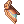 Piece of Queen's Wing | 2 | 1 | Broken Crown | 2 | 1 | 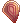 Fire Dragon Scale | 2 | 1 | ||
| 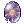 Mother's Nightmare | 3 | 1 | 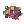 Gemstone | 5 | 1 | Heroic Emblem | 5 | 1 | ||
| 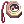 Ba Gua | 3 | 1 | 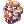 Masque of Tutankhamen 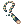 Broken Pharaoh Emblem |
3 | 1 | 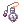 Pocket Watch | 2 | 1 | ||
| 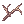 Young Twig | 3 | 1 | 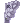 Fragment of Rossata Stone | 5 | 1 | 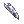 Fang of Hatii | 5 | 1 | ||
| 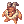 Baphomet Doll | 3 | 1 | 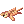 Tiger Skin 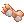 Tiger's Footskin |
5 1 |
1 | 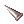 Shining Spear Blade 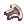 Piece of Shield |
3 3 |
1 | ||
| 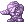 Osiris Doll | 3 | 1 | 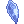 Ice Scale | 1 | 1 | 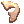 Skeletal Armor Piece | 1 | 1 | ||
| 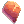 Darkred Scale Piece | 1 | 1 | 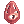 Will of Red Darkness | 2 | 1 | 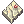 Foolishness of the Blind | 2 | 1 |
Investment rewards
Upon investing, one way or another, you receive Thanks Invest Tickets. These tickets can be safely traded in at Malangdo (/navi malangdo 215/119) by talking to the Thanks Ticket Machine. There's no benefit to keeping them on you, so spend them!
| # of Tickets | Reward items |
|---|---|
| 2 Tickets | WoE Arrow A Quiver |
| 2 Tickets | WoE Arrow S Quiver |
| 12 Tickets | 30 White Potion |
| 14 Tickets | 30 Condensed White Potions |
| 20 Tickets | 10 Cursed Water |
| 30 Tickets | 20 WoE Violet Potions |
| 30 Tickets | 10 Coldproof Potions |
| 30 Tickets | 10 Thunderproof Potions |
| 30 Tickets | 10 Fireproof Potions |
| 30 Tickets | 10 Earthproof Potions |
| 30 Tickets | 10 Fire Elemental Converters |
| 5 Tickets | Red Paw Jelly Bag |
| 50 Tickets | Black Paw Jelly Bag |
Paw Jelly Bags
Choosing Paw Jelly Bag will give you one of the options below in the quantities described.
| Paw Jelly Bag Rates | |||||
|---|---|---|---|---|---|
| Item Name | Red Paw Quantity |
Black Paw Quantity |
Red Paw Chance |
Black Paw Chance |
Known Usage |
| Poison Herb Amoena | 20 | 40 | 2.4% | 1% | Guillotine Cross Poison |
| Poison Herb Makulata | 20 | 40 | 2.4% | 1% | Guillotine Cross Poison |
| Poison Herb Nerium | 20 | 40 | 2.4% | 1% | Guillotine Cross Poison |
| Poison Herb Rantana | 20 | 40 | 2.4% | 1% | Guillotine Cross Poison |
| Poison Herb Scopolia | 20 | 40 | 2.4% | 1% | Guillotine Cross Poison |
| Poison Herb Seratum | 20 | 40 | 2.4% | 1% | Guillotine Cross Poison |
| Izidor | 10 | 20 | 2% | 1% | |
| Bitter Herb | 10 | 20 | 2% | 1% | |
| Singing Plant | 10 | 20 | 2% | 1% | |
| Illusion Flower | 2 | 4 | 2% | 1% | |
| Cold Ice | 10 | 20 | 1.5% | 1% | Geneticist Foods |
| Ice Crystal | 10 | 20 | 1.5% | 1% | Geneticist Foods |
| Blood of Wolf | 10 | 20 | 1.5% | 1% | Geneticist Foods |
| Beef Head | 10 | 20 | 1.5% | 1% | Geneticist Foods |
| Savage Meat | 10 | 20 | 1.5% | 1% | Geneticist Foods |
| Petite's Tail | 10 | 20 | 1.5% | 1% | Geneticist Foods |
| Ice Piece | 10 | 20 | 1.5% | 1% | Geneticist Foods |
| Mandragora Flowerpot | 20 | 40 | 2% | 1% | Geneticist Catalyst |
| Prickly Fruit | 20 | 40 | 2% | 1% | Geneticist Catalyst/Ingredient |
| Fabric | 20 | 40 | 2% | 1% | Geneticist Catalyst/Ingredient |
| Immortal Heart | 20 | 40 | 2% | 1% | Geneticist Catalyst/Ingredient |
| Stem | 20 | 40 | 2% | 1% | Geneticist Catalyst/Ingredient |
| Anodyne | 10 | 20 | 2% | 1% | |
| Aloevera | 10 | 20 | 2% | 1% | |
| Aloe Leaflet | 10 | 20 | 2% | 1% | |
| Amulet | 10 | 20 | 2% | 1% | |
| Four Leaf Clover | 10 | 20 | 2% | 1% | |
| Condensed White Potion Box (200) | 1 | 1 | 1% | 1% | |
| WoE White Potion Box (30) | 1 | 1 | 1% | 1% | |
| WoE Blue Potion Box (10) | 1 | 1 | 1% | 1% | |
| WoE Violet Potion Box (50) | 1 | 1 | 0.5% | 0.5% | |
| White Potion Box (100) | 1 | 1 | 1% | 1% | |
| WoE White Potion | 10 | 20 | 1% | 1% | |
| WoE Blue Potion | 10 | 20 | 0.5% | 0.5% | |
| Old Blue Box | 1 | 1 | 2.2% | 2% | |
| Old Purple Box | 1 | 1 | 4.1% | 2% | |
| Gift Box | 1 | 1 | 3% | 2% | |
| Royal Jelly Box (100) | 1 | 1 | 0.5% | 0.5% | |
| Blue Herb Box (100) | 1 | 1 | 0.5% | 0.5% | |
| Poison Bottle Box (30) | 1 | 1 | 1% | 1% | |
| Yggdrasil Leaf | 10 | 20 | 2% | 1% | |
| Yggdrasil Seed | 2 | 4 | 0.1% | 0.1% | |
| Yggdrasil Berry | 1 | 2 | 0.1% | 0.1% | |
| Dried Yggdrasil Berry | 5 | 10 | 0.1% | 0.1% | Recovers 20% SP |
| Unripe Yggdrasil Berry | 5 | 10 | 0.1% | 0.1% | Recovers 20% HP |
| Blue Potion | 5 | 10 | 0.5% | 0.5% | |
| Speed Potion | 10 | 20 | 3% | 4.6% | |
| Coldproof Potion | 5 | 10 | 2% | 1% | |
| Earthproof Potion | 5 | 10 | 2% | 1% | |
| Fireproof Potion | 5 | 10 | 2% | 1% | |
| Thunderproof Potion | 5 | 10 | 2% | 1% | |
| Cursed Water | 10 | 20 | 1% | 1% | |
| Elemental Converter (Fire) | 5 | 10 | 2% | 1% | |
| Elemental Converter (Water) | 5 | 10 | 2% | 1% | |
| Elemental Converter (Wind) | 5 | 10 | 2% | 1% | |
| Elemental Converter (Earth) | 5 | 10 | 2% | 1% | |
| Box of Drowsiness | 5 | 10 | 2% | 1% | |
| Box of Resentment | 5 | 10 | 2% | 1% | |
| Box of Sunlight | 2 | 4 | 3% | 1.5% | |
| WoE Suit | -- | 1 | -- | 5% | Exclusive to Black Paw |
| WoE Plate | -- | 1 | -- | 5% | Exclusive to Black Paw |
| WoE Robe | -- | 1 | -- | 5% | Exclusive to Black Paw |
| WoE Shoes | -- | 1 | -- | 5% | Exclusive to Black Paw |
| WoE Boots | -- | 1 | -- | 5% | Exclusive to Black Paw |
| WoE Greaves | -- | 1 | -- | 5% | Exclusive to Black Paw |
| WoE Manteau | -- | 1 | -- | 5% | Exclusive to Black Paw |
Dungeons
| Dungeon | Maps | Access location | Requirements |
|---|---|---|---|
| Second Edition Guild Dungeons | schg_dun01 | Mysterious Sunflower | Castle owners:
Everyone else:
|
| First Edition Guild Dungeons
1st Floor |
gld_dun01 | Gate Manager | Castle owners:
Everyone else:
|
| First Edition Guild Dungeons
2nd Floor |
gld_dun01_2 | Gate Manager (dungeon) | Castle owners:
Everyone else:
|
| Hall of Abyss | gld2_prt | Gate Manager (dungeon) | Castle owners:
Everyone else:
|